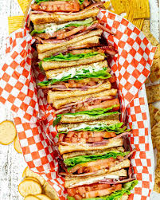
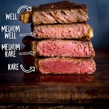

King Kusala's Blog
Welcome to the blog of @the beytuber
Early Life
The early life of Kusala, July 28th 2011 - 14th September 2024
Kusala's life began on July 28th 2011 where he first graced the world with his presence. He was so amazing that the doctors delivering him were blinded by his sheer beauty. He grew up to be an amazing sprot and video game player .
Family
All of his family. September 14th 2024
Kusala's family comprises of 3 other people besides himself. These people include, Thaththi(Kanchana) , Ammi(Isuri) and last but not least Akki(Ayansa).

Food
Kusala enjoys many foods including seafood, chinese, japanese and even american. He is fond and enjoy eating pizza, burgers and french fries to.
Files
-

Bulgarian Sandwitch
Eqxuisite fresh ham -
 Fine aged (50 years) wine.
Fine aged (50 years) wine.
Hand made -

Juiciest Tender steak.
Fattened and carefully prepared.
Stuff....
Things that have relevance ;) France London Walmart Belgium DIY Costco Video Games Family Hungary Roblox Shopping Sweden Fortninte